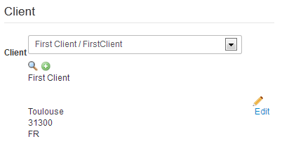

Vous avez acheté, téléchargé et correctement installé Invoicing, vous êtes donc fin prêts à créer votre première facture, mais tout d'abord..
Vous devez aller dans les paramètres de configuration, remplissez les champs "Admin Email" et "Admin Name" puis cliquez sur "Sauvegarder et quitter".
La devise initiale d'Invoicing est l'euro sous la forme, si vous avez besoin d'une autre devise ou si vous souhaitez vous assurer du format des prix : Créer une devise
Vous devrez également penser à la taxe appliquée : Créer une taxe
Vous voulez aussi peut-être permettre l'utilisation de coupons en particuliers : Créer un coupon
Vous avez un catalogue de produits : Créer un produit référence
Un mail sera envoyé au vendeur et l'acheteur dès l'enregistrement de la commande : Modifier les emails et Comprendre la configuration
La facture est générée en HTML et/ou PDF : Modifier la mise en page des commandes et des factures (Utilisateur avancé)
Vous voulez peut-être éditer un devis : Créer un devis
Voici un guide step by step pour vous aider à créer votre première facture ou votre première commande.
Je n'ai pas encore crée de vendeur, je vais donc en créer un en cliquant sur le petit plus ici entouré en rouge.
Voyez ici que le Currency à est "None" par défaut, il faut absolument choisir votre devise, comme ceci, sans quoi les prix ne s'afficheront pas.
Une fenêtre pop-up s'ouvre sur un formulaire permettant de créer le vendeur.
Si vous voulez savoir quels champs sont obligatoires, il suffit de cliquer sur le bouton "Submit" en bas de tous les formulaires d'Invoicing avant de remplir un seul champ.
Nous voyons ici qu'il suffit donc de remplir le champ "Compagny Name" et "Email" pour créer un vendeur.
Les champs "URL", "Phone" et "Email" sont particuliers et gèrent la vérification du format de ce qui y est entré au fur et à mesure.
J'ai donc rempli le formulaire avec les infos de mon vendeur correctement, il ne reste plus qu'à cliquer sur le bouton "Submit".
Les informations du nouveau vendeur sont directement affichées
sur l'édition de la facture.
Vous pourrez toujours l'éditer à l'aide du bouton "Edit".
Le vendeur est ajouté dans la liste des vendeurs disponible dans l'onglets "Vendors" même si vous ne sauvegardez pas la facture, il faudra donc le supprimer dans la vue "Vendors" si vous le souhaitez.
Vous pouvez également, si vous avez de nombreux vendeurs, le rechercher en utilisant le bouton "Loupe".
Une popup s'ouvre alors. Cliquez simplement sur le vendeur que vous souhaitez.
Deux zones sont importantes ici, la première indique le numéro de commande et celui de la facture actuelle, ils seront toujours vides avant le premier "Save" de votre facture ou votre commande. Dans Invoicing, seul le status "Paid" donne lieu à un numéro de facture, nous enregistrons ici une nouvelle "NEW" commande.
La procédure est la même que pour le vendeur.
Ici nous voyons que seul un champ est requis et il y a deux cases à cocher en plus du formulaire pour les vendeurs.
De la même manière que pour le vendeur, les informations du clients s'affichent maintenant sur la facture.
Si vous avez décidé de créer un compte Joomla! pour ce client, il est ajouté quand vous cliquez sur le bouton "Submit" avant toute soumission de la facture, de la même façon, vous ne pouvez pas le supprimer depuis l'édition de cette facture.

Trois zones sont importantes dans la partie produits.
Le premier bouton "Add product" ajoute une ligne à la fin des produits de la liste des produits représentés par des cadres gris. Vous pouvez changer l'ordre d'affichage de ces produits d'un simple cliquer déplacer (drag n drop). Essayez de cliquer sur un zone grise du deuxième produit et de le déplacer au dessus du premier. Une zone jaune va apparaître à l'endroit où le produit sera déplacé.
Le premier bouton "Catalogue" permet d'ajouter dans la liste des produits en-dessous, une ligne contenant un produit préenregistré dans la liste des produits références (Create reference product).
Vous pouvez supprimer un produit en cliquant sur "Delete" correspondant à la ligne de celui ci.
Vous pouvez également voir un cadre indiquant les montants de votre commande, la réduction et le montant après réduction. Il se calcule au fur et à mesure que vous ajoutez des prix au produits.
Ici vous pouvez utiliser un coupon personnalisé pour la commande ou en choisir un parmi la liste des coupons présents dans la partie "Coupons" accessible en cliquant sur l'onglet "Coupons". Vous devez les avoir renseigné avant l'édition de la commande.
Contient des notes additionnelles qui seront présentes dans l'email et/ou la facture en fonction de si vous avez intégré le tag des notes (voir I want to change how the emails are displayed).
Contient les montants de la facture après application du coupon s'il y en a un.
Vous pouvez vérifier que l'enregistrement s'est bien déroulé si vous voyez ce message vert, votre facture/commande a été enregistrée. Sinon, suivez les instructions pour remplir les champs manquants signalés par des "Field Required" dans le formulaire.

Si vous essayez d'éditer une facture déjà payée vous aurez ce message à l'édition pour vous le signaler afin d'éviter de mauvaises manipulations.
Enfin, vous pourrez trouver le message suivant. Il signifie qu'un ou les deux emails (si vous avez choisi d'en envoyer) n'ont pas pu être envoyés. Vérifiez que vous avez entré correctement vos infos de configuration Joomla! dans la Configuration. Si vous utilisez un serveur SMTP spécial, n'oubliez pas de le renseigner dans la configuration Joomla!. Enfin si vous avez toujours un problème, faites une recherche google pour configurer correctement votre le fichier conf selon votre Wamp/Wampp/etc.
Vous pouvez observer l'order number et l'invoice number qui correspondent au numéro de commande et au numéro de facture actuel. Vous pouvez modifier les prochains numéros en modifiant les champs prévus à cet effet dans la Configuration.
Bravo, vous venez de créer votre première commande et votre première facture avec succès !